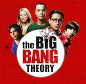

Clemence Thivet
Étudiante @Le Wagon
En ce moment étudiante à Le Wagon dans le but de devenir Developpeuse Web.
Avant Le Wagon
My Favorites Tv Series
|  |
Since 2007 - The Big Bang TheoryMensa-fied best friends and roommates Leonard and Sheldon, physicists who work at the California Institute of Technology, may be able to tell everybody more than they want to know about quantum physics, but getting through most basic social situations, especially ones involving women, totally baffles them. How lucky, then, that babe-alicious waitress/aspiring actress Penny moves in next door. Frequently seen hanging out with Leonard and Sheldon are friends and fellow Caltech scientists Wolowitz and Koothrappali. Will worlds collide? Does Einstein theorize in the woods? |
Since 2004 - Criminal MindsAn elite squad of FBI profilers analyzes the country's most-twisted criminal minds, anticipating the perpetrators' next moves before they can strike again. Each member of the "mind hunter" team brings his or her expertise to pinpoint predators' motivations and identify emotional triggers to stop them. The core group includes an official profiler who is highly skilled at getting into the minds of criminals, a quirky genius, the former media liaison who manages to adeptly balance family life and the job, and a computer wizard. |
|

|
1994 - 2004 - FriendsThree young men and three young women - of the BFF kind - live in the same apartment complex and face life and love in New York. They're not above sticking their noses into one another's businesses and swapping romantic partners, which always leads to the kind of hilarity average people will never experience - especially during breakups. |